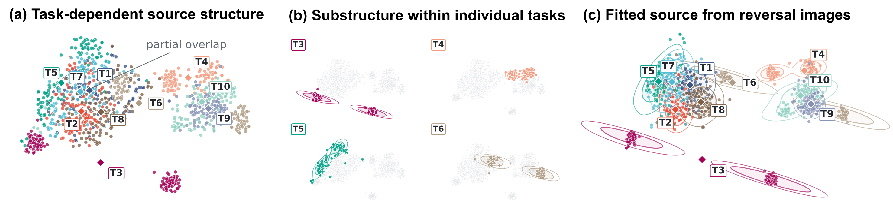
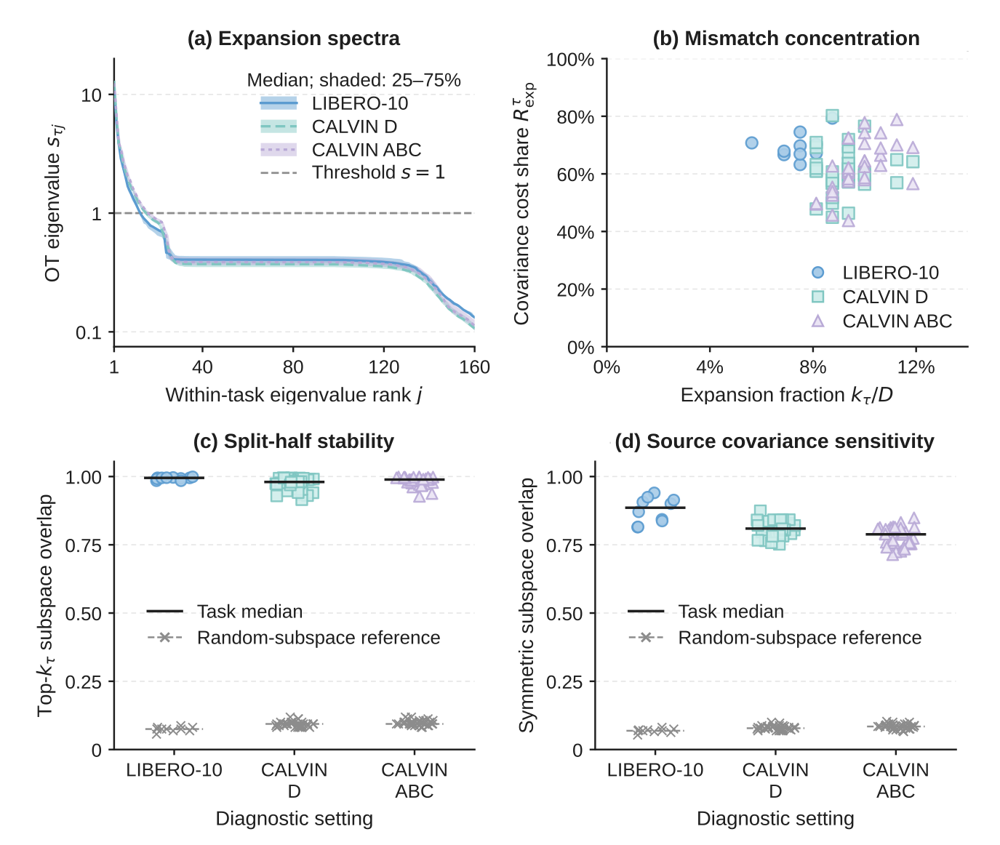
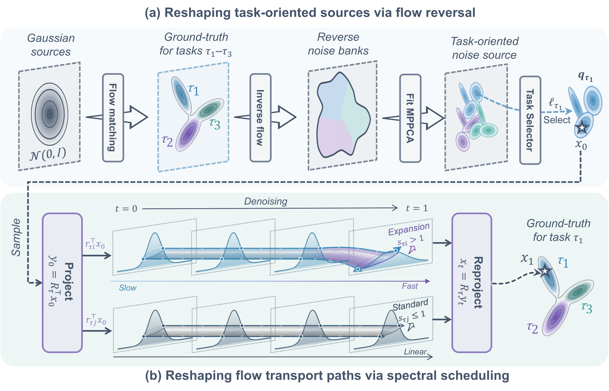
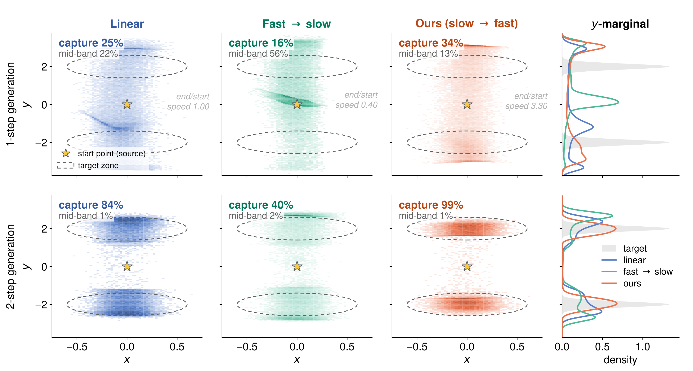
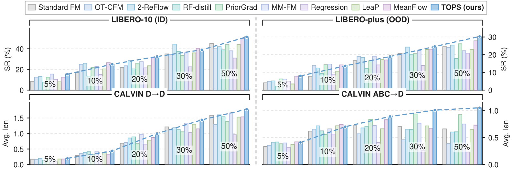
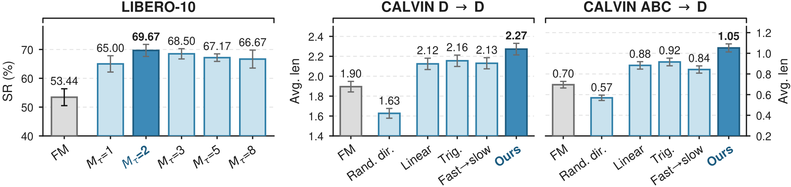
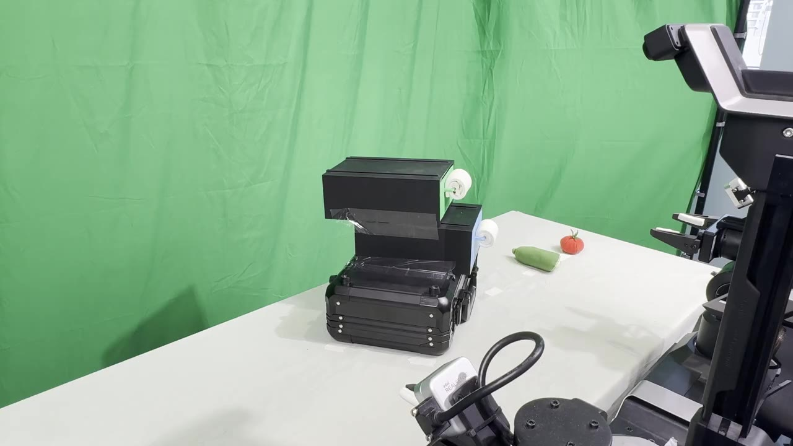
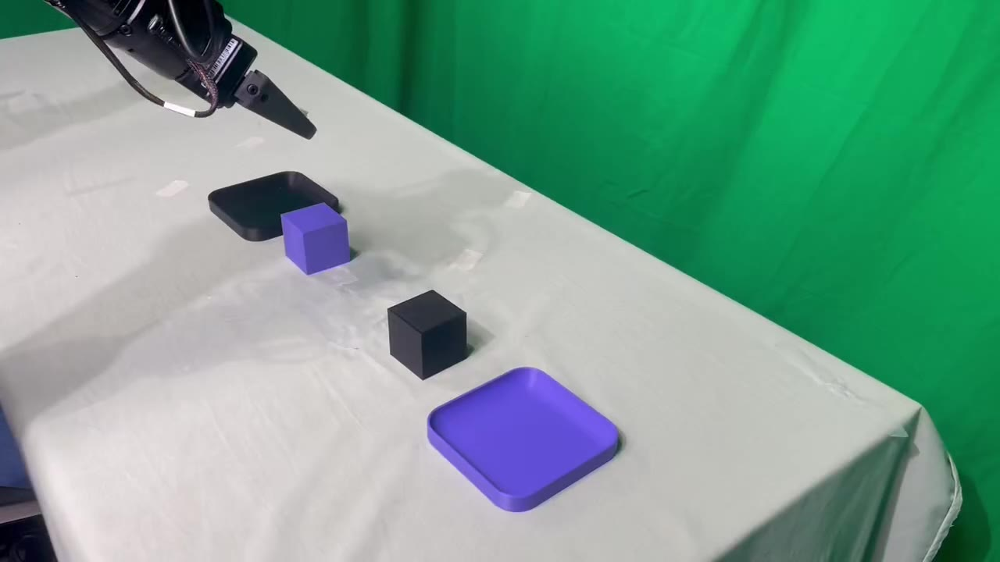
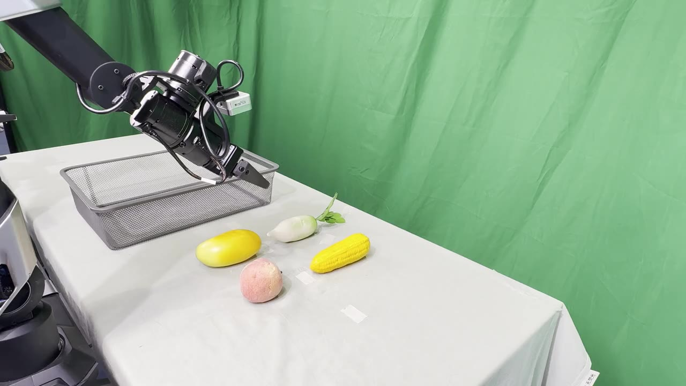

Task-Oriented Priors and Schedules. A flow-matching policy does not have to start every task from the same Gaussian, nor move along the same linear path. TOPS fits a multimodal source to each task from reverse-mapped expert actions, and slows then accelerates transport along the directions that need to expand — no change to the policy network, one integration step at inference.
Flow-based policies for language-conditioned multi-task manipulation commonly share a single Gaussian source prior and a common linear transport path across tasks. However, reliably executing multiple tasks with distinct motion requirements remains challenging for a shared policy.
We introduce TOPS (Task-Oriented Priors and Schedules), which adapts the flow source prior and interpolation schedule to each task without modifying the network architecture. TOPS first constructs multimodal task sources from reverse-mapped expert action sequences, allowing language instructions to select where generation begins. Guided by source–target covariance mismatch, it then slows the transition toward expert actions early in denoising and accelerates it later along directions requiring expansion. Under a Gaussian endpoint model, our analysis shows that this schedule adjustment can lower an upper bound on velocity-prediction risk.
Experiments on LIBERO, LIBERO-Plus, and CALVIN demonstrate improved performance across in-distribution, perturbation and cross-environment settings, alongside better data efficiency. Using one integration step, TOPS raises LIBERO-10 success from 53.44% to 69.67% compared with ten-step Standard Flow Matching (FM), while reducing inference time to approximately one-sixth of the baseline. TOPS also yields consistent gains when transferred to the large-scale flow-based π0.5 policy across all four evaluated settings. Real-world experiments further demonstrate improved task success, including an increase from 20% with standard FM to 80% with TOPS on the upper-drawer opening task.
Reverse-mapped expert action chunks are task-structured, with sub-clusters inside each task. TOPS fits a mixture of probabilistic PCA models (MPPCA) to each task's reverse images, and a lightweight language selector picks the source at inference.
A Gaussian optimal-transport map between source and expert covariances exposes a few expansion directions (7–10% of dimensions, 60–70% of the covariance cost). Along them, TOPS interpolates slow-then-fast; elsewhere it stays linear. A velocity-prediction risk bound motivates the asymmetry.
With a schedule-aware integrator, one step beats ten-step baselines on LIBERO-10, LIBERO-Plus, and CALVIN, improves data efficiency, transfers to π0.5, and lifts real-robot success from 51% to 78% pooled over eight tasks.
We warm up a standard multi-task flow policy, then integrate it backwards: each expert action chunk is traced to the source sample that would have generated it. The reverse images are not an amorphous Gaussian cloud.

Under the warm-up policy, reverse-mapped actions are organised by task and by execution stage (reaching, grasping, placing). Standard FM asks the network to recover all of this from a single task-independent Gaussian.
Relating source and expert covariances through a Gaussian optimal-transport map, expert actions have substantially larger standard deviation than source samples only along a few axes — the expansion directions. Linear interpolation applies the same timing along every axis regardless.
Across LIBERO-10 and CALVIN, expansion directions occupy only 7.4–9.7% of dimensions but account for 60.9–69.6% of the Gaussian-OT covariance cost; on LIBERO-10 they load 76.9% on the gripper coordinate.

TOPS reshapes (a) where generation starts — a task-specific multimodal source selected by language — and (b) how it moves — a direction-dependent interpolation schedule in the task's OT eigenbasis. Both are built once from a warm-up policy, then frozen while the velocity field continues training. The animations below are interactive.

Fitted by EM to each task's bank of reverse images Bτ. The r ≪ D columns of Uτm capture coordinated variation across timesteps and action dimensions; the isotropic residual keeps the source full-rank. Default Mτ = 2, r = 20.
Tτ maps the source covariance onto the expert covariance. Each eigenvalue sτj is the expert-to-source standard-deviation ratio along rτj; directions with sτj > 1 are expansion directions.
Under independent Gaussian endpoints, the Bayes velocity-prediction risk is bounded by a sum of directional terms. Minimising the time integral of the bound yields schedules whose endpoint speeds are in ratio sτj: slower at the source, faster at the expert. The bounded parameterisation above captures 77.5% of the attainable improvement on LIBERO-10 expansion directions.
The velocity field is trained with the usual FM loss on these targets. At inference a learned MiniLM–MLP selector maps the instruction to τ̂, and a two-stage schedule-aware integrator integrates the known schedule exactly while re-estimating the displacement at the midpoint — one step, two network evaluations.

LIBERO-10, one fixed TOPS checkpoint: same trained field, same source — only the solver changes. Generic solvers cannot exploit the non-linear schedule at a budget of two evaluations.
| Integrator | NFE = 2 | NFE = 10 | NFE = 20 |
|---|---|---|---|
| Explicit Euler | 0.00 | 35.67 | 55.00 |
| Explicit midpoint | 0.00 | 57.67 | 57.50 |
| Schedule-aware (ours) | 68.33 | 72.17 | 72.67 |
Success rate (%), mean over three evaluation seeds. Columns align the number of velocity-network evaluations.
Robomimic, one policy per task, 200 demonstrations each. Both rows keep the same fixed Gaussian source; only slow-then-fast scheduling and its integrator are added. Cells read Standard FM → TOPS scheduling.
| Task | 1 step | 5 steps | 10 steps |
|---|---|---|---|
| Lift | 100.0 → 100.0 | 100.0 → 100.0 | 100.0 → 100.0 |
| Can | 90.7 → 95.3 | 92.7 → 95.3 | 94.0 → 96.0 |
| Square | 78.7 → 81.3 | 80.7 → 86.7 | 82.0 → 88.0 |
| Tool Hang | 31.3 → 43.3 | 34.0 → 46.7 | 38.7 → 47.3 |
Success rate (%), mean of three evaluation seeds on the same 50 initial states. One-step TOPS scheduling already beats ten-step Standard FM on Can and Tool Hang.
All methods share the same DiT backbone, action representation, horizons, and a 600-epoch budget. LIBERO reports success rate (%); CALVIN reports mean completed chain length out of five. t is the measured per-call latency on an RTX PRO 6000.
| LIBERO | CALVIN | ||||||
|---|---|---|---|---|---|---|---|
| Method | NFE | LIBERO-10 (ID) | LIBERO-Plus (OOD) | t (ms) | D→D (ID) | ABC→D (OOD) | t (ms) |
| Standard FM ref. | 20 | 53.44±2.93 | 27.11±0.34 | 49.4 | 1.90±0.05 | 0.70±0.03 | 56.2 |
| OT-CFM coupling | 20 | 30.17±2.72 | 19.02±0.12 | 49.4 | 1.28±0.05 | 0.46±0.02 | 58.9 |
| 2-ReFlow few-step | 2 | 37.17±3.12 | 20.22±0.35 | 7.1 | 1.74±0.05 | 0.66±0.03 | 8.6 |
| RF-distill few-step | 1 | 29.17±0.94 | 17.56±0.06 | 4.8 | 1.75±0.05 | 0.70±0.03 | 5.8 |
| MeanFlow few-step | 1 | 59.00±2.83 | 34.73±0.32 | 5.7 | 1.89±0.02 | 0.86±0.02 | 5.4 |
| PriorGrad source | 20 | 62.33±0.24 | 30.56±0.30 | 48.3 | 1.97±0.06 | 1.02±0.04 | 55.4 |
| MM-FM source | 20 | 34.67±3.17 | 16.75±0.49 | 48.8 | 1.75±0.05 | 0.68±0.03 | 52.5 |
| LeaP source | 20 | 60.25±3.89 | 30.72±0.83 | 49.6 | 1.74±0.02 | 0.73±0.03 | 58.7 |
| Regression none | 1 | 40.17±0.62 | 22.17±0.50 | 5.1 | 0.88±0.03 | 0.27±0.02 | 5.7 |
| Source only (fixed Mτ) ours | 2 | 59.17±0.36 | 35.21±0.66 | 7.6 | 2.12±0.06 | 0.88±0.04 | 8.8 |
| Source only (task-wise Mτ) ours | 2 | 63.17±0.64 | 30.52±0.66 | 7.6 | 2.15±0.06 | 0.98±0.04 | 8.6 |
| TOPS (ours) ours | 2 | 69.67±0.61 | 35.29±0.08 | 8.2 | 2.27±0.06 | 1.05±0.04 | 9.0 |
Table 1. Mean ± sample s.d. across three independent training runs. LIBERO-Plus means cover 2,100 variants across six perturbation categories (Camera excluded, all methods score zero). CALVIN averages over 1,000 five-task chains. Bold = best, underlined = second best per column. TOPS uses one two-stage schedule-aware step; ten-step baselines use explicit midpoint (NFE = 20).


Starting from the official pi05_base checkpoint with the standard LoRA recipe and a shared 14K-step budget, TOPS resumes from an intermediate baseline checkpoint and changes only the source, transport target, and sampler. Baseline: ten Euler steps. TOPS: one schedule-aware step (NFE = 2).
Policies receive head- and wrist-camera RGB, proprioception, and a language instruction. Within each suite all candidate targets are present in a shared scene, so the instruction is the only signal that identifies the task. 20 rollouts per task, 160 per method.



Same scene, same instruction, same checkpoint budget. Pick a suite and a task; the three policies play side by side.
@article{an2026tops,
title = {TOPS: Reshaping Flow Source and Transport for Multi-Task Robot Manipulation},
author = {An, Tuo and Zhou, Chuhao and Dong, Jiahua and Li, Jingliang and
Bai, Jiaqi and Jia, Jindou and Yang, Jianfei},
journal = {arXiv preprint},
year = {2026}
}
Limitations. TOPS incurs an offline cost to construct task-specific sources and schedules, which remain fixed during subsequent training and deployment. It selects among predefined tasks and uses a fixed action-chunk length; generalisation to unseen task identities is outside our evaluation.